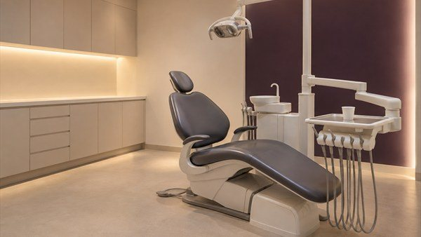
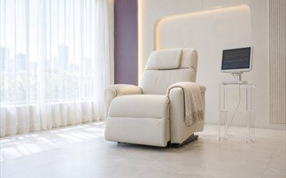
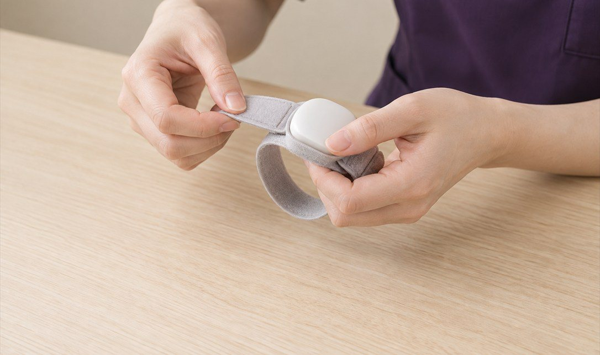
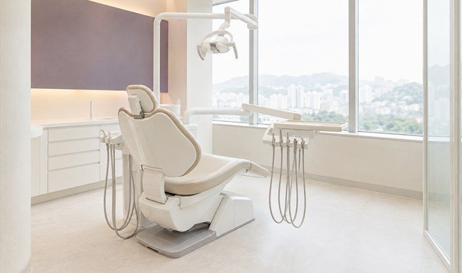
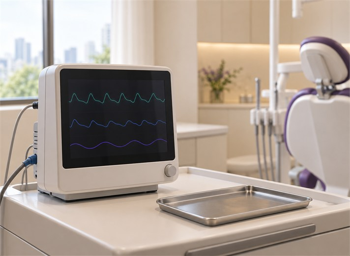
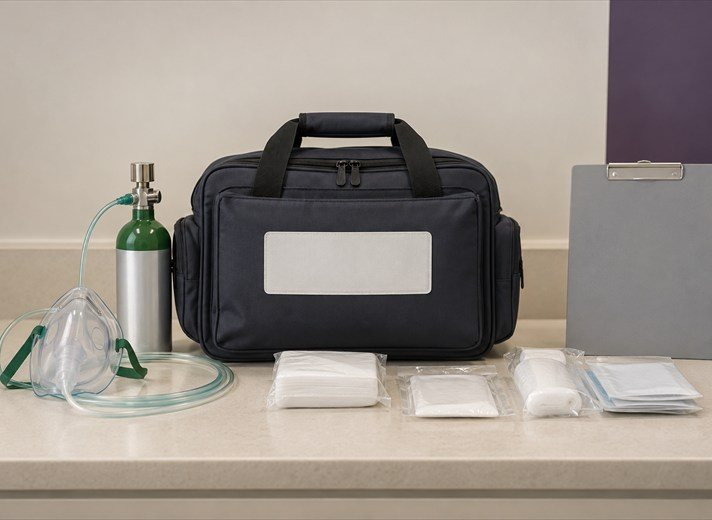

의식하진정 진료
더이상 치과가 두려움의 공간이 되지 않도록
아름결치과가 함께합니다
편안하고 안전한 의식하진정 진료를 경험하세요
닫기
MINTCL BUILDING 5F, 123 TEHERAN-RO,
GANGNAM-GU, SEOUL
서울특별시 강남구 테헤란로 123 민트클빌딩 5층
의식하진정 진료
더이상 치과가 두려움의 공간이 되지 않도록
아름결치과가 함께합니다
편안하고 안전한 의식하진정 진료를 경험하세요
많은 분들이 치과진료에 관한 필요성을 느끼고 있지만
통증과 진료에 관한 공포 때문에 치료를
미루는 경우가 있습니다.
많은 분들이 치과진료에 관한 필요성을
느끼고 있지만 통증과 진료에 관한 공포 때문에
치료를 미루는 경우가 있습니다.

이런 경우 의식하진정 진료를 추천드립니다.
치과 의식하진정 진료(의식하 진정법)는 수면내시경과 같은 진정 약물 요법으로
치과 치료시 가벼운 수면상태로 유도하여 통증 없이 편안하고 안정적으로 치료를 받을 수 있습니다.
임플란트 시술의 통증이 걱정되시는 분
턱관절의 불편함으로 장시간의 치과 진료가 부담되시는 분
치과 진료에 관한 공포감이 심하신 분
구역질이 심하거나 마취가 잘 되지 않는 분
이런 경우 의식하진정 진료를 추천드립니다.
치과 의식하진정 진료(의식하 진정법)는 수면내시경과 같은
진정 약물 요법으로 치과 진료시 가벼운 수면상태로 유도하여
통증 없이 편안하고 안정적으로 치료를 받을 수 있습니다.
임플란트 시술의 통증이 걱정되시는 분
턱관절의 불편함으로 장시간의 치과 진료가 부담되시는 분
치과 진료에 관한 공포감이 심하신 분
구역질이 심하거나 마취가 잘 되지 않는 분

AREUM SPECIAL 01
아름결치과의 수면진료는
1천건이 넘는 성공적인 수면진료 임상경험을
경험을 바탕으로 안전하게 이뤄집니다.
김진수 대표원장은 국내 수면진료 초기부터 경험을 쌓아온
새결치과진정학회 인정의로 10년 전부터
동료 치과의사에게 수면진료 강연을 이어오며 전문성과
노하우를 꾸준히 쌓아왔습니다.
01


AREUM SPECIAL 01
아름결치과의 수면진료는 1천건이 넘는
성공적인 수면진료 임상경험을 기반으로
안전 절차에 따라 이뤄집니다.
김진수 대표원장은 국내 수면진료 초기부터 경험을 쌓아온 새결치과진정학회
인정의로 10년 전부터 꾸준하게 동료 치과의사에게 수면진료
강연을 이어오며 전문성과 노하우를 꾸준히 쌓아왔습니다.
01
INTERVIEW
아름결치과의 의식하진정 진료 과정 대표원장이 직접 알려드립니다.
INTERVIEW
아름결치과의 의식하진정 진료 과정
대표원장이 직접 알려드립니다.
INTERVIEW
AREUM SPECIAL 02
의식하진정 진료 안전 매뉴얼 구축으로
안전에 안심을 더드립니다.
김진수 대표원장은 국제 심폐소생술 교육기관의 전문 훈련을 거쳐
자격을 부여받은 전문가로 의식하진정 진료시 발생할 수 있는 다양한 상황에서
능숙하게 대처가 할 수 있습니다.
02


AREUM SPECIAL 02
의식하진정 진료 안전 매뉴얼 구축으로
안전에 안심을 더드립니다.
02
김진수 대표원장은 국제 교육기관의 전문심혈관소생술
트레이닝을 거쳐 자격을 부여받은 전문가로 의식하진정 진료시
발생할 수 있는 다양한 상황에서 능숙하게 대처가 할 수 있습니다.
CHECK POINT
의식하진정 진료 시술 전 주의사항
1. 의식하진정 진료 전 식사는 가볍게 하세요
2. 진료 후 24시간 동안은 운전이나, 기계를 다루는 등
집중이 필요한 일은 되도록이면 피해주세요
3. 진료 시 보호자와 함께 내원해주세요
4. 24시간 정도는 음주를 삼가해주세요
Q & A
의식하진정 진료에 대한 궁금증
아름결치과가 풀어드립니다.
‘수면 치료’라고 하면 내원자가 잠을 자는 상태로 치과치료를 받는다고 생각하게 되지만,
실제로 잠이 드는 경우와 잠이 들지 않는 경우가 다 있을 수 있습니다.
특히 내원자 협조와 치료 과정의 안정성을 고려하여 잠이 들지 않는 상태를 유지해야 하는 경우도 많습니다.
잠이 들지 않는 경우도 치료가 끝났을 때 치료 과정을 기억하지 못하는 경우가 많기 때문에 의식하진정 진료라는 인식을
하는 경우가 대부분으로 안내합니다.
정맥로를 통한 치과의식하진정 진료로 인한 사망 등 심각한 사고 사례는 국내에 보고된 적이 없습니다.
진료의 특성상 구강 내에 물이나 침, 혈액 등이 고이는 경우가 많기 때문에 우발적인 흡입 사고로 인한 기도 폐쇄 상황에
대응할 수 있는 약물과 농도를 적용하고 있습니다.
의식하진정 진료에 사용되는 미다졸람은 매우 짧은 약효시간을 보이기 때문에 1분 이내 즉시 효과가 나타나고,
또 30-40분의 작용시간을 가지기 때문에 치과영역에서 오래전부터 활발히 사용되어 왔습니다.
담당 의사와 대화를 하면서 진료를 할 수 있는 정도로 의식을 유지할 수 있는 약제이기 때문에, 전신마취제를 사용했을 때처럼
호흡 유지 장치를 이용해야는 부담이 없습니다. 또 혹시나 있을 수 있는 필요 이상의 깊은 진정에 대응할 수 있는 길항제로
플루마제닐이 있는데, 이 약을 투여하면 미다졸람의 효과를 즉시 되돌릴 수 있어서 더욱 안전드립니다.
아닙니다. 보통 수술 시 진행하게 되는 전신마취와 의식하진정 진료 시의 마취는 다릅니다.
전신마취는 자가호흡이 어려워 호흡기의 도움을 받아야 하지만 의식하진정 진료 시의 마취는 말소리에 반응을 할 수 있을 정도의
안정적인 가수면 상태를 유지하는 정도이기 때문에 훨씬 부담이 적은 형태라고 생각하시면 될 것 같습니다.
2026 프리미엄 치과 웹 템플릿
※ 본 사이트와 디자인 및 콘텐츠는 저작권법에 의해 보호되며, 무단 복제 및 도용 시 법적 책임을 물을 수 있습니다